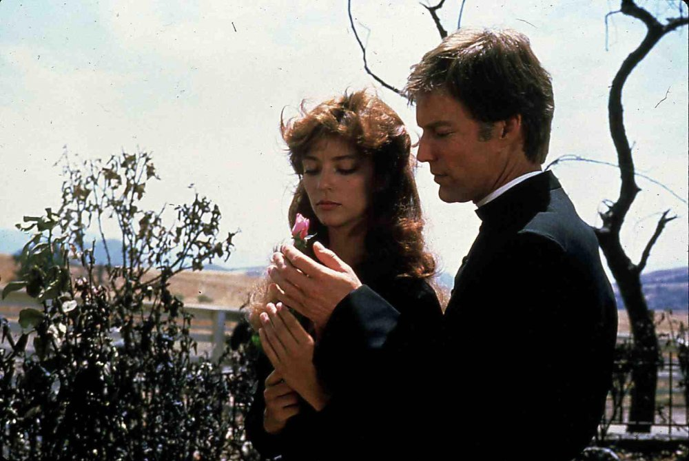

Prekosčite na poglavlja
Osnovno o "Pticama"
"Ptice umiru pjevajući" je knjiga koja istražuje dubine ljudske duše kroz priču o ljubavi, gubitku i oprostu.
Autor, kroz živopisne likove i sugestivni jezik, tkanih u prepletenoj priči, otkriva osnovne istine o čovječanstvu. Radnja se odvija u slojevima, s lirskim opisima prirode koji odjekuju unutarnjim borbama likova.
Ova knjiga nudi ne samo uživanje u ljepoti pisanja već i duboke introspektivne trenutke koji potiču čitatelja da razmisli o vlastitim emocijama i smislu života. "Ptice umiru pjevajući" ne samo da pripovijeda priču, već i stvara emocionalnu simfoniju koja odzvanja u srcima čitatelja nakon posljednje stranice.
Prošle godine je na Interliberu predstavljeno novo izdanje hit biblioteke.

Hej, moja mama je gledala i neku seriju!
Da, osamdesetih je pred male ekrane gledatelje prilijepila i ekranizacija ovog romana.
Serija je osvojila tri Zlatna globusa i šest Emmyja. Glavne su junake utjelovili
Richard Chamberlain i Rachel Ward.
Što je dobro prikazano u knjizi?
U obitelji Cleary, socioekonomski status igra značajnu ulogu u oblikovanju dinamike među članovima. Obitelj Cleary predstavlja mješavinu različitih iskustava i perspektiva, a socioekonomske razlike između pojedinih članova doprinose kompleksnosti njihovih međusobnih odnosa.
Stariji članovi obitelji, s dugom poviješću i uspješnim poslovnim pothvatima, često nose teret očekivanja i tradicija. Njihov visoki socioekonomski status često postavlja standarde koje mlađi članovi moraju ispunjavati ili, pak, izazivati. Obiteljska dinamika reflektira napetost između očekivanja koja proizlaze iz bogatstva i položaja te želje mlađih članova da pronađu vlastiti put u svijetu.
Mlađi članovi obitelji Cleary suočavaju se s izazovima pronalaženja vlastitog identiteta i ostvarivanja uspjeha unatoč visokim standardima koje postavlja obiteljsko bogatstvo. Ova napetost stvara intrigantan okvir za istraživanje kako socioekonomski status može oblikovati individualne ambicije, strahove i životne izbore.
Unatoč razlikama u socioekonomskom statusu, obitelj Cleary također pronalazi načine kako prevladati te podjele. Ljubav, podrška i međusobno razumijevanje postaju ključni elementi koji pomiruju različite socijalne pozicije unutar obitelji. Na taj način, priča o obitelji Cleary dodatno istražuje kako ljubav i veze mogu biti jače od socioekonomskih podjela, a obiteljske vrijednosti postaju važna nit koja ih povezuje usprkos vanjskim razlikama.
Sve ima svojih loših strana, pa tako i ljubavna fabula kod Ralpha i Maggie...
U dinamici između Ralpha i Maggie, počinju se nazirati tamniji obrisi. Ralph, pod izgledom pažljivosti, otkriva svoje skrivene namjere u odnosu prema Maggie. Njegov "grooming" postaje suptilan oblik manipulacije, gdje svaka gesta pažnje služi skrivenim ciljevima.
Maggie, nesvjesna Ralphovih skrivenih motiva, prihvaća njegovu pozornost s povjerenjem. No, iza vanjske pažnje kriju se namjere koje sežu dalje od iskrenog briga. Ralph koristi svoju prividnu pažljivost kao sredstvo kontrole nad Maggie, manipulirajući njezinim osjećajima i postupcima.
Grooming u ovoj priči postaje mračna igra moći, gdje se emocije žrtve iskorištavaju u korist manipulatora. Maggie postaje ranjiva pred Ralphovim suptilnim utjecajem, dok on vješto tkaju mrežu manipulacija. Ova priča otkriva složenost ljudskih odnosa i podvlači opasnost koja može proizići iz izopačene upotrebe prividne pažnje i brige.